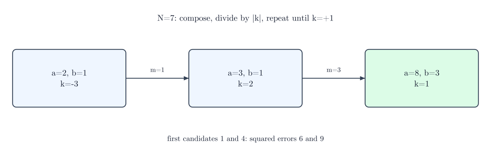
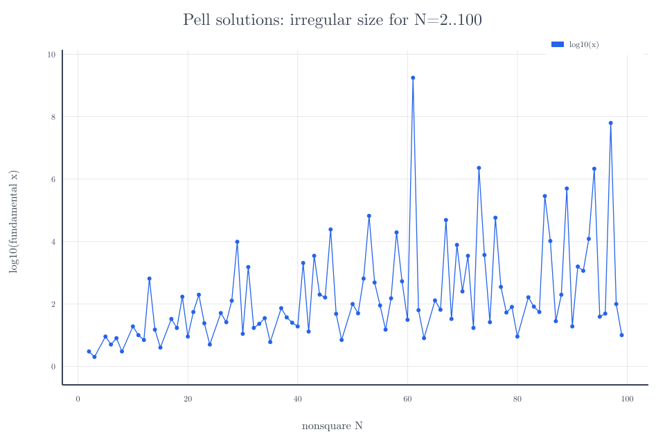
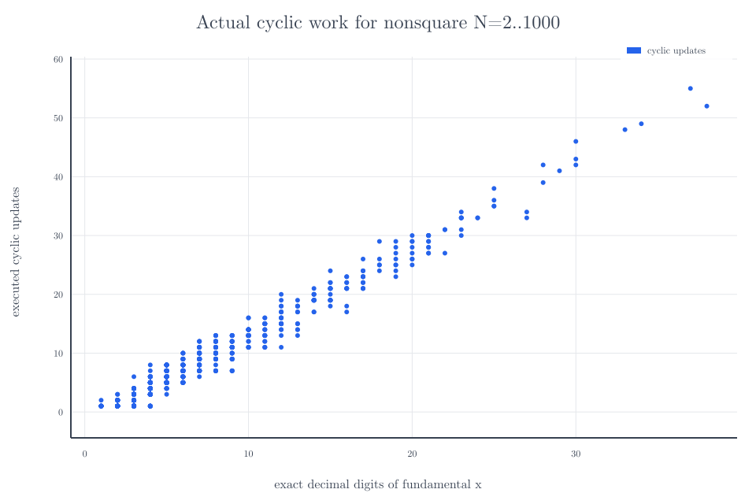

Chakravala: Exact Cyclic Steps for Pell's Equation
Abstract
Pell's equation x²−Ny²=1 has integer solutions whose sizes vary dramatically with N. The Chakravala method composes auxiliary triples a²−Nb²=k and divides out k, choosing a congruent multiplier that minimises m²−N. We begin with a two-step example, inspect the full path for N=13, retain the original famous solutions and size plot, and measure actual cyclic updates. Canonical C++ now records its actual choices, avoids oversized composition numerators through quotient/remainder arithmetic, checks equations without overflowing squares, and reports fixed-width or work-budget failures explicitly. Exact invariants, minimality checks and finite-width limits are distinct parts of the analysis.
N=7: two actual steps and a misleading nearest-root rule
Start at a=floor(√7)=2, b=1, k=−3. The first multiplier must satisfy 2+m=0 modulo 3. The positive candidates around √7 are 1 and 4. Their squared errors are 1−7=6 and 16−7=9, so choose 1. Yet 4 is closer to √7 in ordinary distance. Minimising m²−N is not equivalent to minimising m−√N. This corrects the old report's multiplier description.
The first update gives (3,1,2); the next uses m=3 and gives (8,3,1). Indeed, 8²−7·3²=64−63=1. The diagram and table come from actual kernel records, without recomputing a separate explanatory path.
#include <dm/dm.hpp>
int main() {
std::filesystem::create_directories("build");
const auto trace=dm::algorithms::chakravala_trace(7);
if(trace.steps.size()!=2 || !dm::algorithms::pell_is_solution(7,trace.solution)) return 1;
std::print("| step | before (a,b,k) | multiplier | after (a,b,k) |\n| ---: | :--- | ---: | :--- |\n");
dm::graphics::Diagram diagram(60,1100);
dm::graphics::DiagramNodeStyle node;node.width=4.5;node.height=2.3;node.font_size=20;
diagram.node("initial",{0,0},std::format("a={}, b={}\nk={}",dm::algorithms::int128_text(trace.initial.a),dm::algorithms::int128_text(trace.initial.b),dm::algorithms::int128_text(trace.initial.k)),node);
for(std::size_t i=0;i<trace.steps.size();++i) {
const auto& step=trace.steps[i];const auto& p=step.before;const auto& q=step.after;
std::print("| {} | ({},{},{}) | {} | ({},{},{}) |\n",i+1,
dm::algorithms::int128_text(p.a),dm::algorithms::int128_text(p.b),dm::algorithms::int128_text(p.k),step.choice.chosen,
dm::algorithms::int128_text(q.a),dm::algorithms::int128_text(q.b),dm::algorithms::int128_text(q.k));
if(i==1)node.fill={220,252,231};
const auto id=std::format("state{}",i);
diagram.node(id,{7.0*(i+1),0},std::format("a={}, b={}\nk={}",dm::algorithms::int128_text(q.a),dm::algorithms::int128_text(q.b),dm::algorithms::int128_text(q.k)),node)
.edge(i?"state0":"initial",id,std::format("m={}",step.choice.chosen));
}
const auto& first=trace.steps[0].choice;
diagram.text({7,2.4},"N=7: compose, divide by |k|, repeat until k=+1",20)
.text({7,-2.4},std::format("first candidates {} and {}: squared errors {} and {}",first.below,first.above,
dm::algorithms::uint128_text(first.below_error),dm::algorithms::uint128_text(first.above_error)),18)
.save_svg("build/chakravala_method.svg");
}| step | before (a,b,k) | multiplier | after (a,b,k) |
|---|---|---|---|
| 1 | (2,1,-3) | 1 | (3,1,2) |
| 2 | (3,1,2) | 3 | (8,3,1) |

Why the reduced composition is integral
Multiply a+b√N by m+√N. Its coordinates are am+Nb and a+bm, and its norm is the product of the two norms. Therefore
Let h=k. The maintained triple is primitive, so gcd(b,h)=1. Choosing m=−a·b⁻¹ modulo h makes a+bm divisible by h. Also b(am+Nb)=−a²+Nb²=−k modulo h, so the other numerator is divisible by h. Squaring the congruence and cancelling b² proves h divides m²−N. The reduced update is consequently integral:
Dividing the norm identity by k² proves a'²−Nb'²=k'. Moreover, a·b'−b·a'=k/k=±1. Any common divisor of a' and b' would divide one, so the new pair remains primitive and the next inverse exists. This establishes exact arithmetic invariants. Halting and fundamental-solution minimality require further theory; equation satisfaction alone proves neither. The cited research treats the cyclic method's halting problem. Independent continued-fraction checks below separately test minimality on a finite census.
Within one congruence class, positive m values increase in a fixed progression. Below √N the objective N−m² decreases; above it, m²−N increases. Thus only the two progression elements bracketing √N can minimise the objective. If there is no positive lower element, take the upper one. Equal errors choose the smaller positive multiplier. No floating approximation is needed.
N=13: ties, negative norm one and the complete positive path
The native variant retains the old floor-root start (3,1,−4), continues until k=+1, and uses no shortcuts at k=−1, ±2 or ±4. This differs from variants starting at the nearest square or terminating at either sign of norm one. The first candidates 1 and 5 both have squared error 12, so the tie rule selects 1. At (18,5,−1), all positive multipliers are admissible: 4 has error 3, versus 3's error 4. The old special case incorrectly forced the floor root.
#include <dm/dm.hpp>
int main() {
const auto trace=dm::algorithms::chakravala_trace(13);
std::print("| step | a | b | k | modulus | residue | lower m | upper m | selected m |\n| ---: | ---: | ---: | ---: | ---: | ---: | ---: | ---: | ---: |\n");
for(std::size_t i=0;i<trace.steps.size();++i) {
const auto& s=trace.steps[i];const auto& c=s.choice;
std::print("| {} | {} | {} | {} | {} | {} | {} | {} | {} |\n",i+1,
dm::algorithms::int128_text(s.before.a),dm::algorithms::int128_text(s.before.b),dm::algorithms::int128_text(s.before.k),
c.modulus,c.residue,c.below,c.above,c.chosen);
}
std::print("\nFinal: {}. Exact equation check: {}. Actual updates: {}.\n",trace.solution,
dm::algorithms::pell_is_solution(13,trace.solution),trace.steps.size());
std::print("Nonfundamental (17,12) also solves N=2: {}.\n",dm::algorithms::pell_is_solution(2,{17,12,true}));
}| step | a | b | k | modulus | residue | lower m | upper m | selected m |
|---|---|---|---|---|---|---|---|---|
| 1 | 3 | 1 | -4 | 4 | 1 | 1 | 5 | 1 |
| 2 | 4 | 1 | 3 | 3 | 2 | 2 | 5 | 2 |
| 3 | 7 | 2 | -3 | 3 | 1 | 1 | 4 | 4 |
| 4 | 18 | 5 | -1 | 1 | 0 | 3 | 4 | 4 |
| 5 | 137 | 38 | -3 | 3 | 2 | 2 | 5 | 2 |
| 6 | 256 | 71 | 3 | 3 | 1 | 1 | 4 | 4 |
Final: PellSolution(x=649, y=180, found=true). Exact equation check: true. Actual updates: 6. Nonfundamental (17,12) also solves N=2: true.
The negative-norm pair (18,5) could be squared directly: (18+5√13)²=649+180√13, of norm +1. Historical shortcut rules exploit such identities. This implementation instead performs three further recorded cyclic updates, reaching the same pair. Neither k nor the coordinates shrink at every step. For example, k rises from one back to three. Only the multiplier objective is minimised locally; a and b can grow to enormous values.
The record (17,12) solves N=2 but is larger than (3,2). This executable counterexample shows why a true equation check does not certify fundamental minimality. Solver regression tests use a separate continued-fraction oracle.
Famous solutions and the original size plot
Retain the original seven coefficients and add N=661. Its 38-digit x still fits the signed 128-bit result type, but x² does not. Its largest unreduced composition numerator is 246324873644488654125837607084057065735, which also exceeds the signed limit even though the reduced result fits. The native checker avoids forming x² or Ny²: it cancels common factors between (x−1)(x+1) and Ny·y. Once both sides reduce completely to one, the original products were equal. This also handles manually supplied signed endpoints without overflow.
#include <dm/dm.hpp>
int main() {
std::filesystem::create_directories("build");
std::print("| N | fundamental x | fundamental y | decimal digits of x | exact check |\n| ---: | ---: | ---: | ---: | :--- |\n");
for(const auto N:{2u,3u,5u,13u,29u,61u,109u,661u}) {
const auto p=dm::algorithms::chakravala(N);const auto x=dm::algorithms::int128_text(p.x);
const auto valid=dm::algorithms::pell_is_solution(N,p);if(!valid)return 1;
std::print("| {} | {} | {} | {} | {} |\n",N,x,dm::algorithms::int128_text(p.y),x.size(),valid);
}
std::vector<double> coefficients,log_x;
for(std::uint64_t N=2;N<=100;++N) {
const auto p=dm::algorithms::chakravala(N);if(!p.found)continue;
coefficients.push_back(static_cast<double>(N));log_x.push_back(std::log10(static_cast<double>(p.x)));
}
auto plot=dm::graphics::RPlot::create();
plot.line(coefficients,log_x,"size",{37,99,235},1.3).points(coefficients,log_x,"size",{37,99,235},3)
.legend({"log10(x)"},{{37,99,235}}).title("Pell solutions: irregular size for N=2..100")
.x_label("nonsquare N").y_label("log10(fundamental x)").save_svg("build/chakravala.svg");
std::print("\nOriginal range: {} nonsquare coefficients. The plotted log10 values are approximate, not integer digit counts.\n",coefficients.size());
}| N | fundamental x | fundamental y | decimal digits of x | exact check |
|---|---|---|---|---|
| 2 | 3 | 2 | 1 | true |
| 3 | 2 | 1 | 1 | true |
| 5 | 9 | 4 | 1 | true |
| 13 | 649 | 180 | 3 | true |
| 29 | 9801 | 1820 | 4 | true |
| 61 | 1766319049 | 226153980 | 10 | true |
| 109 | 158070671986249 | 15140424455100 | 15 | true |
| 661 | 16421658242965910275055840472270471049 | 638728478116949861246791167518480580 | 38 | true |
Original range: 90 nonsquare coefficients. The plotted log10 values are approximate, not integer digit counts.

Decimal digit counts come from exact text, while the plot uses approximate floating logarithms. In particular, log10(x) is not the number of digits; for positive integers the count is floor(log10(x))+1, subject to numerical rounding if evaluated through floating arithmetic. The plot's connections guide the eye across discrete nonsquare inputs and do not interpolate a continuous law.
Actual update counts and the finite result range
A cyclic update includes a modular inverse, two candidate evaluations and two reduced compositions. Its count is not a wall-clock measurement or an arbitrary- precision complexity bound. The next program measures the actual trace lengths for nonsquares through 1,000 and then checks which answers fit through 10,000. These are controlled arithmetic inputs; an observational dataset is unnecessary.
#include <dm/dm.hpp>
int main() {
std::filesystem::create_directories("build");
std::vector<double> digits,updates;std::size_t maximum_steps=0;std::uint64_t largest_work_N=0;
for(std::uint64_t N=2;N<=1000;++N) {
const auto trace=dm::algorithms::chakravala_trace(N);if(!trace.solution.found)continue;
digits.push_back(static_cast<double>(dm::algorithms::int128_text(trace.solution.x).size()));
updates.push_back(static_cast<double>(trace.steps.size()));
if(trace.steps.size()>maximum_steps){maximum_steps=trace.steps.size();largest_work_N=N;}
}
std::size_t representable=0,too_large=0,squares=0;
for(std::uint64_t N=2;N<=10000;++N) {
try {
const auto p=dm::algorithms::chakravala(N);
if(!p.found){++squares;continue;}
if(!dm::algorithms::pell_is_solution(N,p))return 1;
++representable;
} catch(const std::overflow_error&) {++too_large;}
}
std::print("| range | measured outcome | count |\n| :--- | :--- | ---: |\n");
std::print("| 2..1000 | actual traced nonsquares | {} |\n",digits.size());
std::print("| 2..1000 | maximum updates, at N={} | {} |\n",largest_work_N,maximum_steps);
std::print("| 2..10000 | signed-128 solutions | {} |\n| 2..10000 | explicit range failures | {} |\n| 2..10000 | square sentinels | {} |\n",representable,too_large,squares);
auto plot=dm::graphics::RPlot::create();
plot.points(digits,updates,"work",{37,99,235},3).legend({"cyclic updates"},{{37,99,235}})
.title("Actual cyclic work for nonsquare N=2..1000")
.x_label("exact decimal digits of fundamental x").y_label("executed cyclic updates")
.save_svg("build/chakravala_work.svg");
}| range | measured outcome | count |
|---|---|---|
| 2..1000 | actual traced nonsquares | 969 |
| 2..1000 | maximum updates, at N=541 | 55 |
| 2..10000 | signed-128 solutions | 8915 |
| 2..10000 | explicit range failures | 985 |
| 2..10000 | square sentinels | 99 |

The original claim that all intermediate coordinates stay near √N is false: the final coordinates themselves can be much larger. Small auxiliary norms and locally selected multipliers do not imply small answers. Nor does a finite count plot establish a bound proportional to continued-fraction period length. The implementation stores signed 128-bit coordinates and fixed-width modular values; it is not an arbitrary-precision Pell solver.
For the composition (a·m+N·b)/h, write each coordinate as q·h+r. A product divided by h becomes q·m+floor(r·m/h), with a separate remainder. Combining the two remainders supplies the final carry. Since all terms are nonnegative, any checked quotient overflow implies that the reduced coordinate cannot fit. This avoids rejecting a representable result merely because an unreduced numerator is too large. Range checks happen before dangerous products or sums; no wrapped pair is returned as a purported solution.
Explicit failures, endpoint coefficients and reproducibility
#include <dm/dm.hpp>
int main() {
bool overflow=false,budget=false,zero_budget=false;
try {(void)dm::algorithms::chakravala(1021);}catch(const std::overflow_error&){overflow=true;}
try {(void)dm::algorithms::chakravala_trace(61,13);}catch(const std::length_error&){budget=true;}
try {(void)dm::algorithms::chakravala_trace(2,0);}catch(const std::length_error&){zero_budget=true;}
const auto exact=dm::algorithms::chakravala_trace(61,14);
const auto square=dm::algorithms::chakravala_trace(49,0);
const auto endpoint=dm::algorithms::chakravala(18446744073709551615ULL);
if(!overflow || !budget || !zero_budget || !dm::algorithms::pell_is_solution(18446744073709551615ULL,endpoint))return 1;
std::print("N=1021 rejects signed-128 overflow: {}. N=61 rejects a 13-update cap: {}.\n",overflow,budget);
std::print("N=61 succeeds with {} updates, x={}.\n",exact.steps.size(),dm::algorithms::int128_text(exact.solution.x));
std::print("Zero budget rejects N=2: {}; square N=49 returns found={} with {} updates.\n",zero_budget,square.solution.found,square.steps.size());
std::print("UINT64_MAX coefficient: x={}, y={}, exact check={}.\n",dm::algorithms::int128_text(endpoint.x),dm::algorithms::int128_text(endpoint.y),
dm::algorithms::pell_is_solution(18446744073709551615ULL,endpoint));
}N=1021 rejects signed-128 overflow: true. N=61 rejects a 13-update cap: true. N=61 succeeds with 14 updates, x=1766319049. Zero budget rejects N=2: true; square N=49 returns found=false with 0 updates. UINT64_MAX coefficient: x=4294967296, y=1, exact check=true.
A step budget limits completed cyclic updates, including zero; a failure returns no partial trace. The ordinary legacy-signature solver permits 100,000 updates and throws if that limit is reached. Squares, including zero and one, retain the {0,0,false} sentinel. Other range failures throw instead of overloading found=false with a partial or numerically corrupted result. All computation is deterministic integer arithmetic, with separate owned traces and no shared state.
Native tests compare every coefficient through 10,000 and 1,000 further seeded coefficients through one million against independently generated continued- fraction convergents. A separate Python big-integer oracle checks the exported actual triples, divisibility, minimum-error choices and complete answers. These are development checks, not a Python dependency of the report. Boundary squares and neighbours cover the full uint64 input range; exact budgets, 128-bit text endpoints, copied records, malformed pairs, the nonfundamental solution example and the original number-theory/formatting regressions are checked separately.
References
- A. Bauval (2014). [An elementary proof of the halting property for Chakravala algorithm](https://arxiv.org/abs/1406.6809). Minimum-norm congruence choices and the distinction between a local norm identity and a global halting argument. The native variant retains its floor-root start and continues to positive norm one.
- Sathaye (2018). [Note on Chakravala Method of Bhaskara II](https://www.ms.uky.edu/~sohum/ma330/files/chakravala.pdf). Composition and reduced integral triples; the note also discusses shortcut rules that this kernel does not use.